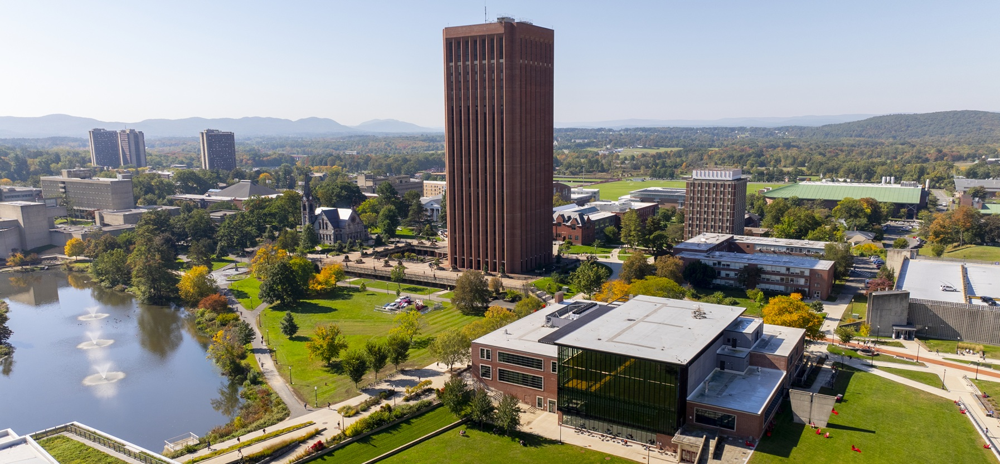

The First Philosophy and Reinforcement Learning Symposium
The First Philosophy and Reinforcement Learning Symposium is an invitational meeting that brings together philosophers and reinforcement learning researchers to explore the intersection of their respective fields. It will be held at the University of Massachusetts Amherst on May 1–2.
About
The Philosophy and Reinforcement Learning Symposium (PRL) is a two-day meeting that brings together researchers in reinforcement learning, philosophy of mind, and cognitive science to examine foundational questions at the intersection of these fields. The first PRL symposium will be held at UMass Amherst in Amherst, MA on May 1–2.
Reinforcement learning (RL) has become central both as an engineering paradigm for sequential decision-making and as a conceptual framework in cognitive science and neuroscience. Yet many of RL’s foundational commitments—such as how to interpret "reward," the normative assumptions implicit in optimization, and the relationship between algorithmic learning rules and human cognition—remain underexamined and, in some cases, underdeveloped. Addressing these issues requires not only philosophical analysis of existing RL frameworks, but also new technical work within RL itself, including the development of methods that better reflect normative, cognitive, or experiential considerations. The Philosophy and Reinforcement Learning Symposium (PRL) is designed to foster sustained, genuinely bidirectional exchange between philosophy and reinforcement learning, bringing together researchers who aim both to sharpen philosophical accounts of learning and mind and to advance reinforcement learning theory and practice in light of those accounts.
The symposium is supported by the HFA and CICS Collaborative Seed Fund and is co-organized by Eleonore Neufeld (Department of Philosophy, HFA) and Philip Thomas (Manning College of Information and Computer Sciences, CICS).
Registration is required. Participation is restricted to invited participants.
Invited participants should have received an email with a link to the registration form.
Schedule
The symposium will take place over two days at two campus locations.
May 1
Integrative Learning Center (ILC), Room S331| 9:30–10:00 | Bagels and coffee (breakfast) |
| 10:00–10:30 | Opening Remarks |
| 10:30–11:00 | Talk: Paul de Font-Reaulx
Evidentialism about Reward
What does the reward function in reinforcement learning correspond to in natural agents, such as humans? I present and defend evidentialism about reward: the view that biological reward signals provide pre-reflective evidence about a functional quantity of basic value that our minds represent and optimize for. This is broadly analogous to how perceptual signals provide pre-reflective evidence about other properties. Additionally, I propose that evidentialism can be made more precise using reinforcement learning models in which the optimization target is determined by a latent parameter about which reward signals provide evidence.
|
| 11:00–11:10 | Q&A |
| 11:10–11:40 | Talk: David Rattray
What’s so rewarding about curiosity?
|
| 11:40–11:50 | Q&A |
| 11:50–2:00 | Lunch |
| 2:00–2:30 | Talk: David Abel
The Foundations of Agency
|
| 2:30–2:40 | Q&A |
| 2:40–3:10 | Talk: Patrick Butlin
Reinforcement Learning and Valenced Conscious Experience
|
| 3:10–3:20 | Q&A |
| 3:20–4:00 | Coffee break |
| 4:00–5:00 | Discussion |
| 5:00–6:15 | Break |
| 6:15–6:30 | Travel to Dinner |
| 6:30 | Dinner |
May 2
South College, Room W245| 10:00–10:30 | Bagels and coffee |
| 10:30–11:00 | Talk: Chandra Sekhar Sripada
Reinforcement Learning and the Limits of Moral Responsibility
|
| 11:00–11:10 | Q&A |
| 11:10–11:40 | Talk: Philip S. Thomas
Qualia Optimization
This talk explores the speculative question: what if current or future AI systems have qualia, such as pain or pleasure? It does so by assuming that AI systems might someday possess qualia—and that the quality of these subjective experiences should be considered alongside performance metrics.
|
| 11:40–11:50 | Q&A |
| 11:50–2:00 | Lunch at Blue Wall or in Amherst |
| 2:00–2:30 | Talk: John D. Martin
Artifacts as Memory Beyond the Agent Boundary
In reinforcement learning, an agent's computation is typically assumed to occur entirely within its own system boundary. Yet examples like marks on a calendar, a string tied around a finger, or footprints in the snow suggest that the environment itself can serve as a substrate for computation. In this talk, I will present a mathematical framework for how the environment can implicitly function as an agent's memory. I'll argue that certain observations, called artifacts, facilitate memory effects by reducing the information required to represent history. I relate this theory with experiments showing that when agents interact with spatial artifacts—such as footprints in the snow—the memory required to learn a performant policy is reduced. These results suggest, at least with respect to memory, that the boundary between agent and environment is more porous than typically assumed.
|
| 2:30–2:40 | Q&A |
| 2:40–3:10 | Talk: Will Dabney
Considerarions on Cognition
|
| 3:10–3:20 | Q&A |
| 3:20–4:00 | Coffee break |
| 4:00–5:00 | Discussion |
| 5:00–5:15 | Closing remarks |
| 5:15–6:00 | Break |
| 6:00–6:30 | Travel to Dinner/Party |
| 6:30–9:00 | Catered Dinner/Party |
Travel
Getting to UMass Amherst
UMass Amherst is located in Amherst, Massachusetts, in the Pioneer Valley region of western Massachusetts. For most travelers, flying into Bradley International Airport (BDL) is typically more convenient than flying into Boston Logan International Airport (BOS), due to shorter ground travel time and generally easier transfers.
- Recommended airport: Bradley International Airport (BDL), Windsor Locks, CT (approximately 45–60 minutes to UMass by car, depending on traffic)
- Alternative airport: Boston Logan International Airport (BOS), Boston, MA (often 2+ hours to UMass, and highly traffic-dependent)
From the airport, attendees typically travel to Amherst via rental car or car service. Additional guidance on ground transportation options can be provided upon request.
Hotel support for invited participants
Invited participants will have hotel accommodations covered for three nights, for itineraries that arrive on April 30 and depart on May 3. Hotel details and booking instructions will be shared directly with invited participants.